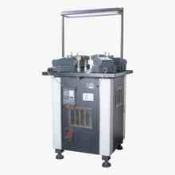

Diamond Polishing Machine / Bench
Machine overview, key assemblies, operating workflow and maintenance guide

Select the photograph to open the full-size image. The photograph shows the supplied machine; exact model, rated power, spindle speed and manufacturer specifications must be confirmed from its nameplate and documentation.
1. Machine Overview & Applications
A diamond polishing machine or bench is used in diamond-processing workflows to hold, orient and polish a diamond against a suitable polishing surface. The exact process depends on the machine design, tooling, stone geometry and operator setup.
- Diamond facet polishing and finishing operations
- Repeatable positioning and controlled operator access
- Workshop or production-bench use, subject to the machine's rated configuration
2. Main Assemblies & Visible Layout
Polishing Stations
Work areas where the diamond, holder and polishing surface are brought into the required working relationship. The pictured unit appears to have two upper work positions; confirm whether both are independently powered and controlled.
Machine Cabinet / Frame
Enclosed lower structure supports the machine and may house electrical, drive or auxiliary components. Access panels should be opened only by qualified personnel after safe isolation.
Control Panel
Operator interface for the functions fitted to the specific model. Verify each switch, indicator, emergency stop and controller label before operation.
Workholding & Positioning
Diamond dop, holder, clamp or positioning arrangement keeps the stone aligned. Compatibility and adjustment range depend on the installed tooling.
Drive / Spindle Assembly
Provides motion to the polishing element where fitted. Check bearing condition, runout, vibration, belt or coupling condition and manufacturer limits.
Support & Leveling
Feet and base support stable installation. Place the machine on a firm, level surface and follow the maker's vibration and anchoring guidance.
3. Key Features to Verify
- Number of polishing stations and whether they operate independently
- Polishing-disc / scaife compatibility, diameter and approved speed range
- Spindle or drive type, motor rating and speed-control method
- Diamond dop, clamp, tang or holder compatibility
- Angle setting, indexing, height and feed adjustments, if provided
- Control-panel functions, indicators, interlocks and emergency stop
- Cooling, lubrication or fluid-delivery arrangement, if fitted
- Dust / splash protection, guards and operator access provisions
- Electrical supply, earthing, overload protection and service access
4. Polishing Process – General Workflow
- Inspect the machine, polishing surface, holder and work area.
- Confirm the stone, dop and tooling are suitable for the intended operation.
- Set up the workholding and alignment using the machine's approved procedure.
- Confirm guards, cooling or lubrication (if specified) and safety controls.
- Start at the approved operating settings and monitor vibration, sound and temperature.
- Carry out polishing in controlled stages; inspect the stone between stages.
- Stop, isolate and clean the machine according to the manufacturer's instructions.
5. Setup, Operation & Quality Checks
- Install on a stable, level bench with suitable electrical protection.
- Verify rotation direction and speed only by the approved commissioning procedure.
- Check disc condition, flatness, mounting security and runout before use.
- Use compatible polishing compounds and consumables for the stone and process.
- Monitor finish quality, facet meet points, symmetry and repeatability.
- Record tooling, consumables and process settings for repeat jobs.
6. Maintenance & Troubleshooting
Abnormal vibration / noise
Stop and isolate. Inspect disc mounting, balance, spindle bearings, couplings and machine leveling. Do not continue until the cause is resolved.
Inconsistent polishing
Check polishing surface condition, compound suitability, holder alignment, stone security and operator setup.
Drive or speed issue
Check the approved supply, controller alarms, motor connections and drive components through a qualified technician.
Overheating
Stop operation and inspect ventilation, loading, bearing condition and any fitted cooling system.
Routine care: keep the machine clean, inspect cables and guards, follow lubrication intervals, check fasteners and maintain service records.
7. Safety
- Only trained operators should use the machine.
- Use appropriate eye protection and any PPE specified by the manufacturer.
- Keep hands, loose clothing and hair away from rotating parts.
- Never bypass guards, interlocks or emergency-stop systems.
- Isolate electrical power before cleaning, adjustment or maintenance.
- Use only rated discs, holders and accessories within their specified speed limits.
8. Technical Specifications – Model Confirmation Required
The supplied photograph does not establish the exact make, model, motor power, spindle RPM, disc size, electrical rating, station independence or control features. These values are intentionally not guessed. Confirm them from the machine nameplate, manual or a supplier inspection before purchase or commissioning.
To be confirmed
To be confirmed
To be confirmed
To be confirmed
To be confirmed
To be confirmed
9. Machine Enquiry
For a new or used machine enquiry, share the make, model, nameplate photograph, operating video, machine condition and required application. Availability and specifications are confirmed individually.
Enquire on WhatsAppBack to Machine Sale & Buy